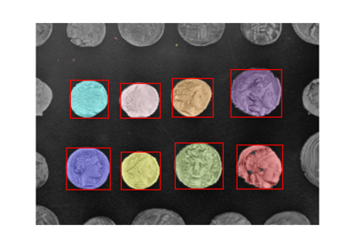
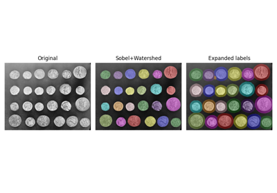
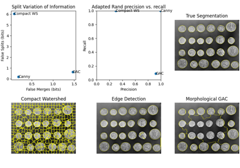
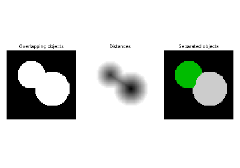

skimage.segmentation#
Algorithms to partition images into meaningful regions or boundaries.
Active contour model. |
|
Chan-Vese segmentation algorithm. |
|
Create a checkerboard level set with binary values. |
|
Clear objects connected to the label image border. |
|
Create a disk level set with binary values. |
|
Expand labels in label image by |
|
Computes Felsenszwalb's efficient graph based image segmentation. |
|
Return bool array where boundaries between labeled regions are True. |
|
Mask corresponding to a flood fill. |
|
Perform flood filling on an image. |
|
Inverse of gradient magnitude. |
|
Return the join of the two input segmentations. |
|
Return image with boundaries between labeled regions highlighted. |
|
Morphological Active Contours without Edges (MorphACWE) |
|
Morphological Geodesic Active Contours (MorphGAC). |
|
Segment image using quickshift clustering in Color-(x,y) space. |
|
Random walker algorithm for segmentation from markers. |
|
Relabel arbitrary labels to {offset, . |
|
Segments image using k-means clustering in Color-(x,y,z) space. |
|
Find watershed basins in an image flooded from given markers. |
- skimage.segmentation.active_contour(image, snake, alpha=0.01, beta=0.1, w_line=0, w_edge=1, gamma=0.01, max_px_move=1.0, max_num_iter=2500, convergence=0.1, *, boundary_condition='periodic')[source]#
Active contour model.
Active contours by fitting snakes to features of images. Supports single and multichannel 2D images. Snakes can be periodic (for segmentation) or have fixed and/or free ends. The output snake has the same length as the input boundary. As the number of points is constant, make sure that the initial snake has enough points to capture the details of the final contour.
- Parameters:
- image(M, N) or (M, N, 3) ndarray
Input image.
- snake(K, 2) ndarray
Initial snake coordinates. For periodic boundary conditions, endpoints must not be duplicated.
- alphafloat, optional
Snake length shape parameter. Higher values makes snake contract faster.
- betafloat, optional
Snake smoothness shape parameter. Higher values makes snake smoother.
- w_linefloat, optional
Controls attraction to brightness. Use negative values to attract toward dark regions.
- w_edgefloat, optional
Controls attraction to edges. Use negative values to repel snake from edges.
- gammafloat, optional
Explicit time stepping parameter.
- max_px_movefloat, optional
Maximum pixel distance to move per iteration.
- max_num_iterint, optional
Maximum iterations to optimize snake shape.
- convergencefloat, optional
Convergence criteria.
- boundary_conditionstring, optional
Boundary conditions for the contour. Can be one of ‘periodic’, ‘free’, ‘fixed’, ‘free-fixed’, or ‘fixed-free’. ‘periodic’ attaches the two ends of the snake, ‘fixed’ holds the end-points in place, and ‘free’ allows free movement of the ends. ‘fixed’ and ‘free’ can be combined by parsing ‘fixed-free’, ‘free-fixed’. Parsing ‘fixed-fixed’ or ‘free-free’ yields same behaviour as ‘fixed’ and ‘free’, respectively.
- Returns:
- snake(K, 2) ndarray
Optimised snake, same shape as input parameter.
References
[1]Kass, M.; Witkin, A.; Terzopoulos, D. “Snakes: Active contour models”. International Journal of Computer Vision 1 (4): 321 (1988). DOI:10.1007/BF00133570
Examples
>>> from skimage.draw import circle_perimeter >>> from skimage.filters import gaussian
Create and smooth image:
>>> img = np.zeros((100, 100)) >>> rr, cc = circle_perimeter(35, 45, 25) >>> img[rr, cc] = 1 >>> img = gaussian(img, sigma=2, preserve_range=False)
Initialize spline:
>>> s = np.linspace(0, 2*np.pi, 100) >>> init = 50 * np.array([np.sin(s), np.cos(s)]).T + 50
Fit spline to image:
>>> snake = active_contour(img, init, w_edge=0, w_line=1) >>> dist = np.sqrt((45-snake[:, 0])**2 + (35-snake[:, 1])**2) >>> int(np.mean(dist)) 25
Active Contour Model
- skimage.segmentation.chan_vese(image, mu=0.25, lambda1=1.0, lambda2=1.0, tol=0.001, max_num_iter=500, dt=0.5, init_level_set='checkerboard', extended_output=False)[source]#
Chan-Vese segmentation algorithm.
Active contour model by evolving a level set. Can be used to segment objects without clearly defined boundaries.
- Parameters:
- image(M, N) ndarray
Grayscale image to be segmented.
- mufloat, optional
‘edge length’ weight parameter. Higher mu values will produce a ‘round’ edge, while values closer to zero will detect smaller objects.
- lambda1float, optional
‘difference from average’ weight parameter for the output region with value ‘True’. If it is lower than lambda2, this region will have a larger range of values than the other.
- lambda2float, optional
‘difference from average’ weight parameter for the output region with value ‘False’. If it is lower than lambda1, this region will have a larger range of values than the other.
- tolfloat, positive, optional
Level set variation tolerance between iterations. If the L2 norm difference between the level sets of successive iterations normalized by the area of the image is below this value, the algorithm will assume that the solution was reached.
- max_num_iteruint, optional
Maximum number of iterations allowed before the algorithm interrupts itself.
- dtfloat, optional
A multiplication factor applied at calculations for each step, serves to accelerate the algorithm. While higher values may speed up the algorithm, they may also lead to convergence problems.
- init_level_setstr or (M, N) ndarray, optional
Defines the starting level set used by the algorithm. If a string is inputted, a level set that matches the image size will automatically be generated. Alternatively, it is possible to define a custom level set, which should be an array of float values, with the same shape as ‘image’. Accepted string values are as follows.
- ‘checkerboard’
the starting level set is defined as sin(x/5*pi)*sin(y/5*pi), where x and y are pixel coordinates. This level set has fast convergence, but may fail to detect implicit edges.
- ‘disk’
the starting level set is defined as the opposite of the distance from the center of the image minus half of the minimum value between image width and image height. This is somewhat slower, but is more likely to properly detect implicit edges.
- ‘small disk’
the starting level set is defined as the opposite of the distance from the center of the image minus a quarter of the minimum value between image width and image height.
- extended_outputbool, optional
If set to True, the return value will be a tuple containing the three return values (see below). If set to False which is the default value, only the ‘segmentation’ array will be returned.
- Returns:
- segmentation(M, N) ndarray, bool
Segmentation produced by the algorithm.
- phi(M, N) ndarray of floats
Final level set computed by the algorithm.
- energieslist of floats
Shows the evolution of the ‘energy’ for each step of the algorithm. This should allow to check whether the algorithm converged.
Notes
The Chan-Vese Algorithm is designed to segment objects without clearly defined boundaries. This algorithm is based on level sets that are evolved iteratively to minimize an energy, which is defined by weighted values corresponding to the sum of differences intensity from the average value outside the segmented region, the sum of differences from the average value inside the segmented region, and a term which is dependent on the length of the boundary of the segmented region.
This algorithm was first proposed by Tony Chan and Luminita Vese, in a publication entitled “An Active Contour Model Without Edges” [1].
This implementation of the algorithm is somewhat simplified in the sense that the area factor ‘nu’ described in the original paper is not implemented, and is only suitable for grayscale images.
Typical values for lambda1 and lambda2 are 1. If the ‘background’ is very different from the segmented object in terms of distribution (for example, a uniform black image with figures of varying intensity), then these values should be different from each other.
Typical values for mu are between 0 and 1, though higher values can be used when dealing with shapes with very ill-defined contours.
The ‘energy’ which this algorithm tries to minimize is defined as the sum of the differences from the average within the region squared and weighed by the ‘lambda’ factors to which is added the length of the contour multiplied by the ‘mu’ factor.
Supports 2D grayscale images only, and does not implement the area term described in the original article.
References
[1]An Active Contour Model without Edges, Tony Chan and Luminita Vese, Scale-Space Theories in Computer Vision, 1999, DOI:10.1007/3-540-48236-9_13
[2]Chan-Vese Segmentation, Pascal Getreuer Image Processing On Line, 2 (2012), pp. 214-224, DOI:10.5201/ipol.2012.g-cv
[3]The Chan-Vese Algorithm - Project Report, Rami Cohen, 2011 arXiv:1107.2782

- skimage.segmentation.checkerboard_level_set(image_shape, square_size=5)[source]#
Create a checkerboard level set with binary values.
- Parameters:
- image_shapetuple of positive integers
Shape of the image.
- square_sizeint, optional
Size of the squares of the checkerboard. It defaults to 5.
- Returns:
- outarray with shape image_shape
Binary level set of the checkerboard.
See also
Morphological Snakes
- skimage.segmentation.clear_border(labels, buffer_size=0, bgval=0, mask=None, *, out=None)[source]#
Clear objects connected to the label image border.
- Parameters:
- labels(M[, N[, …, P]]) array of int or bool
Imaging data labels.
- buffer_sizeint, optional
The width of the border examined. By default, only objects that touch the outside of the image are removed.
- bgvalfloat or int, optional
Cleared objects are set to this value.
- maskndarray of bool, same shape as image, optional.
Image data mask. Objects in labels image overlapping with False pixels of mask will be removed. If defined, the argument buffer_size will be ignored.
- outndarray
Array of the same shape as labels, into which the output is placed. By default, a new array is created.
- Returns:
- out(M[, N[, …, P]]) array
Imaging data labels with cleared borders
Examples
>>> import numpy as np >>> from skimage.segmentation import clear_border >>> labels = np.array([[0, 0, 0, 0, 0, 0, 0, 1, 0], ... [1, 1, 0, 0, 1, 0, 0, 1, 0], ... [1, 1, 0, 1, 0, 1, 0, 0, 0], ... [0, 0, 0, 1, 1, 1, 1, 0, 0], ... [0, 1, 1, 1, 1, 1, 1, 1, 0], ... [0, 0, 0, 0, 0, 0, 0, 0, 0]]) >>> clear_border(labels) array([[0, 0, 0, 0, 0, 0, 0, 0, 0], [0, 0, 0, 0, 1, 0, 0, 0, 0], [0, 0, 0, 1, 0, 1, 0, 0, 0], [0, 0, 0, 1, 1, 1, 1, 0, 0], [0, 1, 1, 1, 1, 1, 1, 1, 0], [0, 0, 0, 0, 0, 0, 0, 0, 0]]) >>> mask = np.array([[0, 0, 1, 1, 1, 1, 1, 1, 1], ... [0, 0, 1, 1, 1, 1, 1, 1, 1], ... [1, 1, 1, 1, 1, 1, 1, 1, 1], ... [1, 1, 1, 1, 1, 1, 1, 1, 1], ... [1, 1, 1, 1, 1, 1, 1, 1, 1], ... [1, 1, 1, 1, 1, 1, 1, 1, 1]]).astype(bool) >>> clear_border(labels, mask=mask) array([[0, 0, 0, 0, 0, 0, 0, 1, 0], [0, 0, 0, 0, 1, 0, 0, 1, 0], [0, 0, 0, 1, 0, 1, 0, 0, 0], [0, 0, 0, 1, 1, 1, 1, 0, 0], [0, 1, 1, 1, 1, 1, 1, 1, 0], [0, 0, 0, 0, 0, 0, 0, 0, 0]])
Label image regionsColocalization metrics
Measure fluorescence intensity at the nuclear envelope
Measure fluorescence intensity at the nuclear envelope
- skimage.segmentation.disk_level_set(image_shape, *, center=None, radius=None)[source]#
Create a disk level set with binary values.
- Parameters:
- image_shapetuple of positive integers
Shape of the image
- centertuple of positive integers, optional
Coordinates of the center of the disk given in (row, column). If not given, it defaults to the center of the image.
- radiusfloat, optional
Radius of the disk. If not given, it is set to the 75% of the smallest image dimension.
- Returns:
- outarray with shape image_shape
Binary level set of the disk with the given radius and center.
See also
- skimage.segmentation.expand_labels(label_image, distance=1, spacing=1)[source]#
Expand labels in label image by
distancepixels without overlapping.Given a label image,
expand_labelsgrows label regions (connected components) outwards by up todistanceunits without overflowing into neighboring regions. More specifically, each background pixel that is within Euclidean distance of <=distancepixels of a connected component is assigned the label of that connected component. The spacing parameter can be used to specify the spacing rate of the distance transform used to calculate the Euclidean distance for anisotropic images. Where multiple connected components are withindistancepixels of a background pixel, the label value of the closest connected component will be assigned (see Notes for the case of multiple labels at equal distance).- Parameters:
- label_imagendarray of dtype int
label image
- distancefloat
Euclidean distance in pixels by which to grow the labels. Default is one.
- spacingfloat, or sequence of float, optional
Spacing of elements along each dimension. If a sequence, must be of length equal to the input rank; if a single number, this is used for all axes. If not specified, a grid spacing of unity is implied.
- Returns:
- enlarged_labelsndarray of dtype int
Labeled array, where all connected regions have been enlarged
Notes
Where labels are spaced more than
distancepixels are apart, this is equivalent to a morphological dilation with a disc or hyperball of radiusdistance. However, in contrast to a morphological dilation,expand_labelswill not expand a label region into a neighboring region.This implementation of
expand_labelsis derived from CellProfiler [1], where it is known as module “IdentifySecondaryObjects (Distance-N)” [2].There is an important edge case when a pixel has the same distance to multiple regions, as it is not defined which region expands into that space. Here, the exact behavior depends on the upstream implementation of
scipy.ndimage.distance_transform_edt.References
Examples
>>> labels = np.array([0, 1, 0, 0, 0, 0, 2]) >>> expand_labels(labels, distance=1) array([1, 1, 1, 0, 0, 2, 2])
Labels will not overwrite each other:
>>> expand_labels(labels, distance=3) array([1, 1, 1, 1, 2, 2, 2])
In case of ties, behavior is undefined, but currently resolves to the label closest to
(0,) * ndimin lexicographical order.>>> labels_tied = np.array([0, 1, 0, 2, 0]) >>> expand_labels(labels_tied, 1) array([1, 1, 1, 2, 2]) >>> labels2d = np.array( ... [[0, 1, 0, 0], ... [2, 0, 0, 0], ... [0, 3, 0, 0]] ... ) >>> expand_labels(labels2d, 1) array([[2, 1, 1, 0], [2, 2, 0, 0], [2, 3, 3, 0]]) >>> expand_labels(labels2d, 1, spacing=[1, 0.5]) array([[1, 1, 1, 1], [2, 2, 2, 0], [3, 3, 3, 3]])
Expand segmentation labels without overlap
Expand segmentation labels without overlap
- skimage.segmentation.felzenszwalb(image, scale=1, sigma=0.8, min_size=20, *, channel_axis=-1)[source]#
Computes Felsenszwalb’s efficient graph based image segmentation.
Produces an oversegmentation of a multichannel (i.e. RGB) image using a fast, minimum spanning tree based clustering on the image grid. The parameter
scalesets an observation level. Higher scale means less and larger segments.sigmais the diameter of a Gaussian kernel, used for smoothing the image prior to segmentation.The number of produced segments as well as their size can only be controlled indirectly through
scale. Segment size within an image can vary greatly depending on local contrast.For RGB images, the algorithm uses the euclidean distance between pixels in color space.
- Parameters:
- image(M, N[, 3]) ndarray
Input image.
- scalefloat
Free parameter. Higher means larger clusters.
- sigmafloat
Width (standard deviation) of Gaussian kernel used in preprocessing.
- min_sizeint
Minimum component size. Enforced using postprocessing.
- channel_axisint or None, optional
If None, the image is assumed to be a grayscale (single channel) image. Otherwise, this parameter indicates which axis of the array corresponds to channels.
Added in version 0.19:
channel_axiswas added in 0.19.
- Returns:
- segment_mask(M, N) ndarray
Integer mask indicating segment labels.
Notes
The k parameter used in the original paper renamed to scale here.
References
[1]Efficient graph-based image segmentation, Felzenszwalb, P.F. and Huttenlocher, D.P. International Journal of Computer Vision, 2004
Examples
>>> from skimage.segmentation import felzenszwalb >>> from skimage.data import coffee >>> img = coffee() >>> segments = felzenszwalb(img, scale=3.0, sigma=0.95, min_size=5)
Comparison of segmentation and superpixel algorithms
Comparison of segmentation and superpixel algorithms
- skimage.segmentation.find_boundaries(label_img, connectivity=1, mode='thick', background=0)[source]#
Return bool array where boundaries between labeled regions are True.
- Parameters:
- label_imgarray of int or bool
An array in which different regions are labeled with either different integers or boolean values.
- connectivityint in {1, …, label_img.ndim}, optional
A pixel is considered a boundary pixel if any of its neighbors has a different label. connectivity controls which pixels are considered neighbors. A connectivity of 1 (default) means pixels sharing an edge (in 2D) or a face (in 3D) will be considered neighbors. A connectivity of label_img.ndim means pixels sharing a corner will be considered neighbors.
- modestring in {‘thick’, ‘inner’, ‘outer’, ‘subpixel’}
How to mark the boundaries:
thick: any pixel not completely surrounded by pixels of the same label (defined by connectivity) is marked as a boundary. This results in boundaries that are 2 pixels thick.
inner: outline the pixels just inside of objects, leaving background pixels untouched.
outer: outline pixels in the background around object boundaries. When two objects touch, their boundary is also marked.
subpixel: return a doubled image, with pixels between the original pixels marked as boundary where appropriate.
- backgroundint, optional
For modes ‘inner’ and ‘outer’, a definition of a background label is required. See mode for descriptions of these two.
- Returns:
- boundariesarray of bool, same shape as label_img
A bool image where
Truerepresents a boundary pixel. For mode equal to ‘subpixel’,boundaries.shape[i]is equal to2 * label_img.shape[i] - 1for alli(a pixel is inserted in between all other pairs of pixels).
Examples
>>> labels = np.array([[0, 0, 0, 0, 0, 0, 0, 0, 0, 0], ... [0, 0, 0, 0, 0, 0, 0, 0, 0, 0], ... [0, 0, 0, 0, 0, 5, 5, 5, 0, 0], ... [0, 0, 1, 1, 1, 5, 5, 5, 0, 0], ... [0, 0, 1, 1, 1, 5, 5, 5, 0, 0], ... [0, 0, 1, 1, 1, 5, 5, 5, 0, 0], ... [0, 0, 0, 0, 0, 5, 5, 5, 0, 0], ... [0, 0, 0, 0, 0, 0, 0, 0, 0, 0], ... [0, 0, 0, 0, 0, 0, 0, 0, 0, 0]], dtype=np.uint8) >>> find_boundaries(labels, mode='thick').astype(np.uint8) array([[0, 0, 0, 0, 0, 0, 0, 0, 0, 0], [0, 0, 0, 0, 0, 1, 1, 1, 0, 0], [0, 0, 1, 1, 1, 1, 1, 1, 1, 0], [0, 1, 1, 1, 1, 1, 0, 1, 1, 0], [0, 1, 1, 0, 1, 1, 0, 1, 1, 0], [0, 1, 1, 1, 1, 1, 0, 1, 1, 0], [0, 0, 1, 1, 1, 1, 1, 1, 1, 0], [0, 0, 0, 0, 0, 1, 1, 1, 0, 0], [0, 0, 0, 0, 0, 0, 0, 0, 0, 0]], dtype=uint8) >>> find_boundaries(labels, mode='inner').astype(np.uint8) array([[0, 0, 0, 0, 0, 0, 0, 0, 0, 0], [0, 0, 0, 0, 0, 0, 0, 0, 0, 0], [0, 0, 0, 0, 0, 1, 1, 1, 0, 0], [0, 0, 1, 1, 1, 1, 0, 1, 0, 0], [0, 0, 1, 0, 1, 1, 0, 1, 0, 0], [0, 0, 1, 1, 1, 1, 0, 1, 0, 0], [0, 0, 0, 0, 0, 1, 1, 1, 0, 0], [0, 0, 0, 0, 0, 0, 0, 0, 0, 0], [0, 0, 0, 0, 0, 0, 0, 0, 0, 0]], dtype=uint8) >>> find_boundaries(labels, mode='outer').astype(np.uint8) array([[0, 0, 0, 0, 0, 0, 0, 0, 0, 0], [0, 0, 0, 0, 0, 1, 1, 1, 0, 0], [0, 0, 1, 1, 1, 1, 0, 0, 1, 0], [0, 1, 0, 0, 1, 1, 0, 0, 1, 0], [0, 1, 0, 0, 1, 1, 0, 0, 1, 0], [0, 1, 0, 0, 1, 1, 0, 0, 1, 0], [0, 0, 1, 1, 1, 1, 0, 0, 1, 0], [0, 0, 0, 0, 0, 1, 1, 1, 0, 0], [0, 0, 0, 0, 0, 0, 0, 0, 0, 0]], dtype=uint8) >>> labels_small = labels[::2, ::3] >>> labels_small array([[0, 0, 0, 0], [0, 0, 5, 0], [0, 1, 5, 0], [0, 0, 5, 0], [0, 0, 0, 0]], dtype=uint8) >>> find_boundaries(labels_small, mode='subpixel').astype(np.uint8) array([[0, 0, 0, 0, 0, 0, 0], [0, 0, 0, 1, 1, 1, 0], [0, 0, 0, 1, 0, 1, 0], [0, 1, 1, 1, 0, 1, 0], [0, 1, 0, 1, 0, 1, 0], [0, 1, 1, 1, 0, 1, 0], [0, 0, 0, 1, 0, 1, 0], [0, 0, 0, 1, 1, 1, 0], [0, 0, 0, 0, 0, 0, 0]], dtype=uint8) >>> bool_image = np.array([[False, False, False, False, False], ... [False, False, False, False, False], ... [False, False, True, True, True], ... [False, False, True, True, True], ... [False, False, True, True, True]], ... dtype=bool) >>> find_boundaries(bool_image) array([[False, False, False, False, False], [False, False, True, True, True], [False, True, True, True, True], [False, True, True, False, False], [False, True, True, False, False]])
- skimage.segmentation.flood(image, seed_point, *, footprint=None, connectivity=None, tolerance=None)[source]#
Mask corresponding to a flood fill.
Starting at a specific seed_point, connected points equal or within tolerance of the seed value are found.
- Parameters:
- imagendarray
An n-dimensional array.
- seed_pointtuple or int
The point in image used as the starting point for the flood fill. If the image is 1D, this point may be given as an integer.
- footprintndarray, optional
The footprint (structuring element) used to determine the neighborhood of each evaluated pixel. It must contain only 1’s and 0’s, have the same number of dimensions as image. If not given, all adjacent pixels are considered as part of the neighborhood (fully connected).
- connectivityint, optional
A number used to determine the neighborhood of each evaluated pixel. Adjacent pixels whose squared distance from the center is less than or equal to connectivity are considered neighbors. Ignored if footprint is not None.
- tolerancefloat or int, optional
If None (default), adjacent values must be strictly equal to the initial value of image at seed_point. This is fastest. If a value is given, a comparison will be done at every point and if within tolerance of the initial value will also be filled (inclusive).
- Returns:
- maskndarray
A Boolean array with the same shape as image is returned, with True values for areas connected to and equal (or within tolerance of) the seed point. All other values are False.
Notes
The conceptual analogy of this operation is the ‘paint bucket’ tool in many raster graphics programs. This function returns just the mask representing the fill.
If indices are desired rather than masks for memory reasons, the user can simply run
numpy.nonzeroon the result, save the indices, and discard this mask.Examples
>>> from skimage.morphology import flood >>> image = np.zeros((4, 7), dtype=int) >>> image[1:3, 1:3] = 1 >>> image[3, 0] = 1 >>> image[1:3, 4:6] = 2 >>> image[3, 6] = 3 >>> image array([[0, 0, 0, 0, 0, 0, 0], [0, 1, 1, 0, 2, 2, 0], [0, 1, 1, 0, 2, 2, 0], [1, 0, 0, 0, 0, 0, 3]])
Fill connected ones with 5, with full connectivity (diagonals included):
>>> mask = flood(image, (1, 1)) >>> image_flooded = image.copy() >>> image_flooded[mask] = 5 >>> image_flooded array([[0, 0, 0, 0, 0, 0, 0], [0, 5, 5, 0, 2, 2, 0], [0, 5, 5, 0, 2, 2, 0], [5, 0, 0, 0, 0, 0, 3]])
Fill connected ones with 5, excluding diagonal points (connectivity 1):
>>> mask = flood(image, (1, 1), connectivity=1) >>> image_flooded = image.copy() >>> image_flooded[mask] = 5 >>> image_flooded array([[0, 0, 0, 0, 0, 0, 0], [0, 5, 5, 0, 2, 2, 0], [0, 5, 5, 0, 2, 2, 0], [1, 0, 0, 0, 0, 0, 3]])
Fill with a tolerance:
>>> mask = flood(image, (0, 0), tolerance=1) >>> image_flooded = image.copy() >>> image_flooded[mask] = 5 >>> image_flooded array([[5, 5, 5, 5, 5, 5, 5], [5, 5, 5, 5, 2, 2, 5], [5, 5, 5, 5, 2, 2, 5], [5, 5, 5, 5, 5, 5, 3]])
Flood Fill
- skimage.segmentation.flood_fill(image, seed_point, new_value, *, footprint=None, connectivity=None, tolerance=None, in_place=False)[source]#
Perform flood filling on an image.
Starting at a specific seed_point, connected points equal or within tolerance of the seed value are found, then set to new_value.
- Parameters:
- imagendarray
An n-dimensional array.
- seed_pointtuple or int
The point in image used as the starting point for the flood fill. If the image is 1D, this point may be given as an integer.
- new_valueimage type
New value to set the entire fill. This must be chosen in agreement with the dtype of image.
- footprintndarray, optional
The footprint (structuring element) used to determine the neighborhood of each evaluated pixel. It must contain only 1’s and 0’s, have the same number of dimensions as image. If not given, all adjacent pixels are considered as part of the neighborhood (fully connected).
- connectivityint, optional
A number used to determine the neighborhood of each evaluated pixel. Adjacent pixels whose squared distance from the center is less than or equal to connectivity are considered neighbors. Ignored if footprint is not None.
- tolerancefloat or int, optional
If None (default), adjacent values must be strictly equal to the value of image at seed_point to be filled. This is fastest. If a tolerance is provided, adjacent points with values within plus or minus tolerance from the seed point are filled (inclusive).
- in_placebool, optional
If True, flood filling is applied to image in place. If False, the flood filled result is returned without modifying the input image (default).
- Returns:
- filledndarray
An array with the same shape as image is returned, with values in areas connected to and equal (or within tolerance of) the seed point replaced with new_value.
Notes
The conceptual analogy of this operation is the ‘paint bucket’ tool in many raster graphics programs.
Examples
>>> from skimage.morphology import flood_fill >>> image = np.zeros((4, 7), dtype=int) >>> image[1:3, 1:3] = 1 >>> image[3, 0] = 1 >>> image[1:3, 4:6] = 2 >>> image[3, 6] = 3 >>> image array([[0, 0, 0, 0, 0, 0, 0], [0, 1, 1, 0, 2, 2, 0], [0, 1, 1, 0, 2, 2, 0], [1, 0, 0, 0, 0, 0, 3]])
Fill connected ones with 5, with full connectivity (diagonals included):
>>> flood_fill(image, (1, 1), 5) array([[0, 0, 0, 0, 0, 0, 0], [0, 5, 5, 0, 2, 2, 0], [0, 5, 5, 0, 2, 2, 0], [5, 0, 0, 0, 0, 0, 3]])
Fill connected ones with 5, excluding diagonal points (connectivity 1):
>>> flood_fill(image, (1, 1), 5, connectivity=1) array([[0, 0, 0, 0, 0, 0, 0], [0, 5, 5, 0, 2, 2, 0], [0, 5, 5, 0, 2, 2, 0], [1, 0, 0, 0, 0, 0, 3]])
Fill with a tolerance:
>>> flood_fill(image, (0, 0), 5, tolerance=1) array([[5, 5, 5, 5, 5, 5, 5], [5, 5, 5, 5, 2, 2, 5], [5, 5, 5, 5, 2, 2, 5], [5, 5, 5, 5, 5, 5, 3]])
Flood Fill
- skimage.segmentation.inverse_gaussian_gradient(image, alpha=100.0, sigma=5.0)[source]#
Inverse of gradient magnitude.
Compute the magnitude of the gradients in the image and then inverts the result in the range [0, 1]. Flat areas are assigned values close to 1, while areas close to borders are assigned values close to 0.
This function or a similar one defined by the user should be applied over the image as a preprocessing step before calling
morphological_geodesic_active_contour.- Parameters:
- image(M, N) or (L, M, N) array
Grayscale image or volume.
- alphafloat, optional
Controls the steepness of the inversion. A larger value will make the transition between the flat areas and border areas steeper in the resulting array.
- sigmafloat, optional
Standard deviation of the Gaussian filter applied over the image.
- Returns:
- gimage(M, N) or (L, M, N) array
Preprocessed image (or volume) suitable for
morphological_geodesic_active_contour.
Morphological SnakesEvaluating segmentation metrics
Evaluating segmentation metrics
- skimage.segmentation.join_segmentations(s1, s2, return_mapping: bool = False)[source]#
Return the join of the two input segmentations.
The join J of S1 and S2 is defined as the segmentation in which two voxels are in the same segment if and only if they are in the same segment in both S1 and S2.
- Parameters:
- s1, s2numpy arrays
s1 and s2 are label fields of the same shape.
- return_mappingbool, optional
If true, return mappings for joined segmentation labels to the original labels.
- Returns:
- jnumpy array
The join segmentation of s1 and s2.
- map_j_to_s1ArrayMap, optional
Mapping from labels of the joined segmentation j to labels of s1.
- map_j_to_s2ArrayMap, optional
Mapping from labels of the joined segmentation j to labels of s2.
Examples
>>> from skimage.segmentation import join_segmentations >>> s1 = np.array([[0, 0, 1, 1], ... [0, 2, 1, 1], ... [2, 2, 2, 1]]) >>> s2 = np.array([[0, 1, 1, 0], ... [0, 1, 1, 0], ... [0, 1, 1, 1]]) >>> join_segmentations(s1, s2) array([[0, 1, 3, 2], [0, 5, 3, 2], [4, 5, 5, 3]]) >>> j, m1, m2 = join_segmentations(s1, s2, return_mapping=True) >>> m1 ArrayMap(array([0, 1, 2, 3, 4, 5]), array([0, 0, 1, 1, 2, 2])) >>> np.all(m1[j] == s1) True >>> np.all(m2[j] == s2) True

- skimage.segmentation.mark_boundaries(image, label_img, color=(1, 1, 0), outline_color=None, mode='outer', background_label=0)[source]#
Return image with boundaries between labeled regions highlighted.
- Parameters:
- image(M, N[, 3]) array
Grayscale or RGB image.
- label_img(M, N) array of int
Label array where regions are marked by different integer values.
- colorlength-3 sequence, optional
RGB color of boundaries in the output image.
- outline_colorlength-3 sequence, optional
RGB color surrounding boundaries in the output image. If None, no outline is drawn.
- modestring in {‘thick’, ‘inner’, ‘outer’, ‘subpixel’}, optional
The mode for finding boundaries.
- background_labelint, optional
Which label to consider background (this is only useful for modes
innerandouter).
- Returns:
- marked(M, N, 3) array of float
An image in which the boundaries between labels are superimposed on the original image.
See also
Apply maskSLIC vs SLICComparison of segmentation and superpixel algorithms
Comparison of segmentation and superpixel algorithmsRegion adjacency graph (RAG) Merging
Region adjacency graph (RAG) MergingTrainable segmentation using local features and random forests
Trainable segmentation using local features and random forestsEvaluating segmentation metrics
Evaluating segmentation metrics
- skimage.segmentation.morphological_chan_vese(image, num_iter, init_level_set='checkerboard', smoothing=1, lambda1=1, lambda2=1, iter_callback=<function <lambda>>)[source]#
Morphological Active Contours without Edges (MorphACWE)
Active contours without edges implemented with morphological operators. It can be used to segment objects in images and volumes without well defined borders. It is required that the inside of the object looks different on average than the outside (i.e., the inner area of the object should be darker or lighter than the outer area on average).
- Parameters:
- image(M, N) or (L, M, N) array
Grayscale image or volume to be segmented.
- num_iteruint
Number of num_iter to run
- init_level_setstr, (M, N) array, or (L, M, N) array
Initial level set. If an array is given, it will be binarized and used as the initial level set. If a string is given, it defines the method to generate a reasonable initial level set with the shape of the image. Accepted values are ‘checkerboard’ and ‘disk’. See the documentation of
checkerboard_level_setanddisk_level_setrespectively for details about how these level sets are created.- smoothinguint, optional
Number of times the smoothing operator is applied per iteration. Reasonable values are around 1-4. Larger values lead to smoother segmentations.
- lambda1float, optional
Weight parameter for the outer region. If lambda1 is larger than lambda2, the outer region will contain a larger range of values than the inner region.
- lambda2float, optional
Weight parameter for the inner region. If lambda2 is larger than lambda1, the inner region will contain a larger range of values than the outer region.
- iter_callbackfunction, optional
If given, this function is called once per iteration with the current level set as the only argument. This is useful for debugging or for plotting intermediate results during the evolution.
- Returns:
- out(M, N) or (L, M, N) array
Final segmentation (i.e., the final level set)
See also
Notes
This is a version of the Chan-Vese algorithm that uses morphological operators instead of solving a partial differential equation (PDE) for the evolution of the contour. The set of morphological operators used in this algorithm are proved to be infinitesimally equivalent to the Chan-Vese PDE (see [1]). However, morphological operators are do not suffer from the numerical stability issues typically found in PDEs (it is not necessary to find the right time step for the evolution), and are computationally faster.
The algorithm and its theoretical derivation are described in [1].
References
[1] (1,2)A Morphological Approach to Curvature-based Evolution of Curves and Surfaces, Pablo Márquez-Neila, Luis Baumela, Luis Álvarez. In IEEE Transactions on Pattern Analysis and Machine Intelligence (PAMI), 2014, DOI:10.1109/TPAMI.2013.106
Morphological Snakes
- skimage.segmentation.morphological_geodesic_active_contour(gimage, num_iter, init_level_set='disk', smoothing=1, threshold='auto', balloon=0, iter_callback=<function <lambda>>)[source]#
Morphological Geodesic Active Contours (MorphGAC).
Geodesic active contours implemented with morphological operators. It can be used to segment objects with visible but noisy, cluttered, broken borders.
- Parameters:
- gimage(M, N) or (L, M, N) array
Preprocessed image or volume to be segmented. This is very rarely the original image. Instead, this is usually a preprocessed version of the original image that enhances and highlights the borders (or other structures) of the object to segment.
morphological_geodesic_active_contour()will try to stop the contour evolution in areas where gimage is small. Seeinverse_gaussian_gradient()as an example function to perform this preprocessing. Note that the quality ofmorphological_geodesic_active_contour()might greatly depend on this preprocessing.- num_iteruint
Number of num_iter to run.
- init_level_setstr, (M, N) array, or (L, M, N) array
Initial level set. If an array is given, it will be binarized and used as the initial level set. If a string is given, it defines the method to generate a reasonable initial level set with the shape of the image. Accepted values are ‘checkerboard’ and ‘disk’. See the documentation of
checkerboard_level_setanddisk_level_setrespectively for details about how these level sets are created.- smoothinguint, optional
Number of times the smoothing operator is applied per iteration. Reasonable values are around 1-4. Larger values lead to smoother segmentations.
- thresholdfloat, optional
Areas of the image with a value smaller than this threshold will be considered borders. The evolution of the contour will stop in these areas.
- balloonfloat, optional
Balloon force to guide the contour in non-informative areas of the image, i.e., areas where the gradient of the image is too small to push the contour towards a border. A negative value will shrink the contour, while a positive value will expand the contour in these areas. Setting this to zero will disable the balloon force.
- iter_callbackfunction, optional
If given, this function is called once per iteration with the current level set as the only argument. This is useful for debugging or for plotting intermediate results during the evolution.
- Returns:
- out(M, N) or (L, M, N) array
Final segmentation (i.e., the final level set)
Notes
This is a version of the Geodesic Active Contours (GAC) algorithm that uses morphological operators instead of solving partial differential equations (PDEs) for the evolution of the contour. The set of morphological operators used in this algorithm are proved to be infinitesimally equivalent to the GAC PDEs (see [1]). However, morphological operators are do not suffer from the numerical stability issues typically found in PDEs (e.g., it is not necessary to find the right time step for the evolution), and are computationally faster.
The algorithm and its theoretical derivation are described in [1].
References
[1] (1,2)A Morphological Approach to Curvature-based Evolution of Curves and Surfaces, Pablo Márquez-Neila, Luis Baumela, Luis Álvarez. In IEEE Transactions on Pattern Analysis and Machine Intelligence (PAMI), 2014, DOI:10.1109/TPAMI.2013.106
Morphological SnakesEvaluating segmentation metrics
Evaluating segmentation metrics
- skimage.segmentation.quickshift(image, ratio=1.0, kernel_size=5, max_dist=10, return_tree=False, sigma=0, convert2lab=True, rng=42, *, channel_axis=-1)[source]#
Segment image using quickshift clustering in Color-(x,y) space.
Produces an oversegmentation of the image using the quickshift mode-seeking algorithm.
- Parameters:
- image(M, N, C) ndarray
Input image. The axis corresponding to color channels can be specified via the channel_axis argument.
- ratiofloat, optional, between 0 and 1
Balances color-space proximity and image-space proximity. Higher values give more weight to color-space.
- kernel_sizefloat, optional
Width of Gaussian kernel used in smoothing the sample density. Higher means fewer clusters.
- max_distfloat, optional
Cut-off point for data distances. Higher means fewer clusters.
- return_treebool, optional
Whether to return the full segmentation hierarchy tree and distances.
- sigmafloat, optional
Width for Gaussian smoothing as preprocessing. Zero means no smoothing.
- convert2labbool, optional
Whether the input should be converted to Lab colorspace prior to segmentation. For this purpose, the input is assumed to be RGB.
- rng{
numpy.random.Generator, int}, optional Pseudo-random number generator. By default, a PCG64 generator is used (see
numpy.random.default_rng()). If rng is an int, it is used to seed the generator.The PRNG is used to break ties, and is seeded with 42 by default.
- channel_axisint, optional
The axis of image corresponding to color channels. Defaults to the last axis.
- Returns:
- segment_mask(M, N) ndarray
Integer mask indicating segment labels.
Notes
The authors advocate to convert the image to Lab color space prior to segmentation, though this is not strictly necessary. For this to work, the image must be given in RGB format.
References
[1]Quick shift and kernel methods for mode seeking, Vedaldi, A. and Soatto, S. European Conference on Computer Vision, 2008
Comparison of segmentation and superpixel algorithms
Comparison of segmentation and superpixel algorithms
- skimage.segmentation.random_walker(data, labels, beta=130, mode='cg_j', tol=0.001, copy=True, return_full_prob=False, spacing=None, *, prob_tol=0.001, channel_axis=None)[source]#
Random walker algorithm for segmentation from markers.
Random walker algorithm is implemented for gray-level or multichannel images.
- Parameters:
- data(M, N[, P][, C]) ndarray
Image to be segmented in phases. Gray-level data can be two- or three-dimensional; multichannel data can be three- or four- dimensional with channel_axis specifying the dimension containing channels. Data spacing is assumed isotropic unless the spacing keyword argument is used.
- labels(M, N[, P]) array of ints
Array of seed markers labeled with different positive integers for different phases. Zero-labeled pixels are unlabeled pixels. Negative labels correspond to inactive pixels that are not taken into account (they are removed from the graph). If labels are not consecutive integers, the labels array will be transformed so that labels are consecutive. In the multichannel case, labels should have the same shape as a single channel of data, i.e. without the final dimension denoting channels.
- betafloat, optional
Penalization coefficient for the random walker motion (the greater beta, the more difficult the diffusion).
- modestring, available options {‘cg’, ‘cg_j’, ‘cg_mg’, ‘bf’}
Mode for solving the linear system in the random walker algorithm.
‘bf’ (brute force): an LU factorization of the Laplacian is computed. This is fast for small images (<1024x1024), but very slow and memory-intensive for large images (e.g., 3-D volumes).
‘cg’ (conjugate gradient): the linear system is solved iteratively using the Conjugate Gradient method from scipy.sparse.linalg. This is less memory-consuming than the brute force method for large images, but it is quite slow.
‘cg_j’ (conjugate gradient with Jacobi preconditionner): the Jacobi preconditionner is applied during the Conjugate gradient method iterations. This may accelerate the convergence of the ‘cg’ method.
‘cg_mg’ (conjugate gradient with multigrid preconditioner): a preconditioner is computed using a multigrid solver, then the solution is computed with the Conjugate Gradient method. This mode requires that the pyamg module is installed.
- tolfloat, optional
Tolerance to achieve when solving the linear system using the conjugate gradient based modes (‘cg’, ‘cg_j’ and ‘cg_mg’).
- copybool, optional
If copy is False, the labels array will be overwritten with the result of the segmentation. Use copy=False if you want to save on memory.
- return_full_probbool, optional
If True, the probability that a pixel belongs to each of the labels will be returned, instead of only the most likely label.
- spacingiterable of floats, optional
Spacing between voxels in each spatial dimension. If None, then the spacing between pixels/voxels in each dimension is assumed 1.
- prob_tolfloat, optional
Tolerance on the resulting probability to be in the interval [0, 1]. If the tolerance is not satisfied, a warning is displayed.
- channel_axisint or None, optional
If None, the image is assumed to be a grayscale (single channel) image. Otherwise, this parameter indicates which axis of the array corresponds to channels.
Added in version 0.19:
channel_axiswas added in 0.19.
- Returns:
- outputndarray
If return_full_prob is False, array of ints of same shape and data type as labels, in which each pixel has been labeled according to the marker that reached the pixel first by anisotropic diffusion.
If return_full_prob is True, array of floats of shape (nlabels, labels.shape). output[label_nb, i, j] is the probability that label label_nb reaches the pixel (i, j) first.
See also
skimage.segmentation.watershedA segmentation algorithm based on mathematical morphology and “flooding” of regions from markers.
Notes
Multichannel inputs are scaled with all channel data combined. Ensure all channels are separately normalized prior to running this algorithm.
The spacing argument is specifically for anisotropic datasets, where data points are spaced differently in one or more spatial dimensions. Anisotropic data is commonly encountered in medical imaging.
The algorithm was first proposed in [1].
The algorithm solves the diffusion equation at infinite times for sources placed on markers of each phase in turn. A pixel is labeled with the phase that has the greatest probability to diffuse first to the pixel.
The diffusion equation is solved by minimizing x.T L x for each phase, where L is the Laplacian of the weighted graph of the image, and x is the probability that a marker of the given phase arrives first at a pixel by diffusion (x=1 on markers of the phase, x=0 on the other markers, and the other coefficients are looked for). Each pixel is attributed the label for which it has a maximal value of x. The Laplacian L of the image is defined as:
L_ii = d_i, the number of neighbors of pixel i (the degree of i)
L_ij = -w_ij if i and j are adjacent pixels
The weight w_ij is a decreasing function of the norm of the local gradient. This ensures that diffusion is easier between pixels of similar values.
When the Laplacian is decomposed into blocks of marked and unmarked pixels:
L = M B.T B A
with first indices corresponding to marked pixels, and then to unmarked pixels, minimizing x.T L x for one phase amount to solving:
A x = - B x_m
where x_m = 1 on markers of the given phase, and 0 on other markers. This linear system is solved in the algorithm using a direct method for small images, and an iterative method for larger images.
References
[1]Leo Grady, Random walks for image segmentation, IEEE Trans Pattern Anal Mach Intell. 2006 Nov;28(11):1768-83. DOI:10.1109/TPAMI.2006.233.
Examples
>>> rng = np.random.default_rng() >>> a = np.zeros((10, 10)) + 0.2 * rng.random((10, 10)) >>> a[5:8, 5:8] += 1 >>> b = np.zeros_like(a, dtype=np.int32) >>> b[3, 3] = 1 # Marker for first phase >>> b[6, 6] = 2 # Marker for second phase >>> random_walker(a, b) array([[1, 1, 1, 1, 1, 1, 1, 1, 1, 1], [1, 1, 1, 1, 1, 1, 1, 1, 1, 1], [1, 1, 1, 1, 1, 1, 1, 1, 1, 1], [1, 1, 1, 1, 1, 1, 1, 1, 1, 1], [1, 1, 1, 1, 1, 1, 1, 1, 1, 1], [1, 1, 1, 1, 1, 2, 2, 2, 1, 1], [1, 1, 1, 1, 1, 2, 2, 2, 1, 1], [1, 1, 1, 1, 1, 2, 2, 2, 1, 1], [1, 1, 1, 1, 1, 1, 1, 1, 1, 1], [1, 1, 1, 1, 1, 1, 1, 1, 1, 1]], dtype=int32)
Random walker segmentation
- skimage.segmentation.relabel_sequential(label_field, offset=1)[source]#
Relabel arbitrary labels to {offset, … offset + number_of_labels}.
This function also returns the forward map (mapping the original labels to the reduced labels) and the inverse map (mapping the reduced labels back to the original ones).
- Parameters:
- label_fieldnumpy array of int, arbitrary shape
An array of labels, which must be non-negative integers.
- offsetint, optional
The return labels will start at offset, which should be strictly positive.
- Returns:
- relabelednumpy array of int, same shape as label_field
The input label field with labels mapped to {offset, …, number_of_labels + offset - 1}. The data type will be the same as label_field, except when offset + number_of_labels causes overflow of the current data type.
- forward_mapArrayMap
The map from the original label space to the returned label space. Can be used to re-apply the same mapping. See examples for usage. The output data type will be the same as relabeled.
- inverse_mapArrayMap
The map from the new label space to the original space. This can be used to reconstruct the original label field from the relabeled one. The output data type will be the same as label_field.
Notes
The label 0 is assumed to denote the background and is never remapped.
The forward map can be extremely big for some inputs, since its length is given by the maximum of the label field. However, in most situations,
label_field.max()is much smaller thanlabel_field.size, and in these cases the forward map is guaranteed to be smaller than either the input or output images.Examples
>>> from skimage.segmentation import relabel_sequential >>> label_field = np.array([1, 1, 5, 5, 8, 99, 42]) >>> relab, fw, inv = relabel_sequential(label_field) >>> relab array([1, 1, 2, 2, 3, 5, 4]) >>> print(fw) ArrayMap: 1 → 1 5 → 2 8 → 3 42 → 4 99 → 5 >>> np.array(fw) array([0, 1, 0, 0, 0, 2, 0, 0, 3, 0, 0, 0, 0, 0, 0, 0, 0, 0, 0, 0, 0, 0, 0, 0, 0, 0, 0, 0, 0, 0, 0, 0, 0, 0, 0, 0, 0, 0, 0, 0, 0, 0, 4, 0, 0, 0, 0, 0, 0, 0, 0, 0, 0, 0, 0, 0, 0, 0, 0, 0, 0, 0, 0, 0, 0, 0, 0, 0, 0, 0, 0, 0, 0, 0, 0, 0, 0, 0, 0, 0, 0, 0, 0, 0, 0, 0, 0, 0, 0, 0, 0, 0, 0, 0, 0, 0, 0, 0, 0, 5]) >>> np.array(inv) array([ 0, 1, 5, 8, 42, 99]) >>> (fw[label_field] == relab).all() True >>> (inv[relab] == label_field).all() True >>> relab, fw, inv = relabel_sequential(label_field, offset=5) >>> relab array([5, 5, 6, 6, 7, 9, 8])
- skimage.segmentation.slic(image, n_segments=100, compactness=10.0, max_num_iter=10, sigma=0, spacing=None, convert2lab=None, enforce_connectivity=True, min_size_factor=0.5, max_size_factor=3, slic_zero=False, start_label=1, mask=None, *, channel_axis=-1)[source]#
Segments image using k-means clustering in Color-(x,y,z) space.
- Parameters:
- image(M, N[, P][, C]) ndarray
Input image. Can be 2D or 3D, and grayscale or multichannel (see channel_axis parameter). Input image must either be NaN-free or the NaN’s must be masked out.
- n_segmentsint, optional
The (approximate) number of labels in the segmented output image.
- compactnessfloat, optional
Balances color proximity and space proximity. Higher values give more weight to space proximity, making superpixel shapes more square/cubic. In SLICO mode, this is the initial compactness. This parameter depends strongly on image contrast and on the shapes of objects in the image. We recommend exploring possible values on a log scale, e.g., 0.01, 0.1, 1, 10, 100, before refining around a chosen value.
- max_num_iterint, optional
Maximum number of iterations of k-means.
- sigmafloat or array-like of floats, optional
Width of Gaussian smoothing kernel for pre-processing for each dimension of the image. The same sigma is applied to each dimension in case of a scalar value. Zero means no smoothing. Note that sigma is automatically scaled if it is scalar and if a manual voxel spacing is provided (see Notes section). If sigma is array-like, its size must match
image’s number of spatial dimensions.- spacingarray-like of floats, optional
The voxel spacing along each spatial dimension. By default,
slicassumes uniform spacing (same voxel resolution along each spatial dimension). This parameter controls the weights of the distances along the spatial dimensions during k-means clustering.- convert2labbool, optional
Whether the input should be converted to Lab colorspace prior to segmentation. The input image must be RGB. Highly recommended. This option defaults to
Truewhenchannel_axis` is not None *and* ``image.shape[-1] == 3.- enforce_connectivitybool, optional
Whether the generated segments are connected or not
- min_size_factorfloat, optional
Proportion of the minimum segment size to be removed with respect to the supposed segment size
`depth*width*height/n_segments`- max_size_factorfloat, optional
Proportion of the maximum connected segment size. A value of 3 works in most of the cases.
- slic_zerobool, optional
Run SLIC-zero, the zero-parameter mode of SLIC. [2]
- start_labelint, optional
The labels’ index start. Should be 0 or 1.
Added in version 0.17:
start_labelwas introduced in 0.17- maskndarray, optional
If provided, superpixels are computed only where mask is True, and seed points are homogeneously distributed over the mask using a k-means clustering strategy. Mask number of dimensions must be equal to image number of spatial dimensions.
Added in version 0.17:
maskwas introduced in 0.17- channel_axisint or None, optional
If None, the image is assumed to be a grayscale (single channel) image. Otherwise, this parameter indicates which axis of the array corresponds to channels.
Added in version 0.19:
channel_axiswas added in 0.19.
- Returns:
- labels2D or 3D array
Integer mask indicating segment labels.
- Raises:
- ValueError
If
convert2labis set toTruebut the last array dimension is not of length 3.- ValueError
If
start_labelis not 0 or 1.- ValueError
If
imagecontains unmasked NaN values.- ValueError
If
imagecontains unmasked infinite values.- ValueError
If
imageis 2D butchannel_axisis -1 (the default).
Notes
If sigma > 0, the image is smoothed using a Gaussian kernel prior to segmentation.
If sigma is scalar and spacing is provided, the kernel width is divided along each dimension by the spacing. For example, if
sigma=1andspacing=[5, 1, 1], the effective sigma is[0.2, 1, 1]. This ensures sensible smoothing for anisotropic images.The image is rescaled to be in [0, 1] prior to processing (masked values are ignored).
Images of shape (M, N, 3) are interpreted as 2D RGB images by default. To interpret them as 3D with the last dimension having length 3, use channel_axis=None.
start_label is introduced to handle the issue [4]. Label indexing starts at 1 by default.
References
[1]Radhakrishna Achanta, Appu Shaji, Kevin Smith, Aurelien Lucchi, Pascal Fua, and Sabine Süsstrunk, SLIC Superpixels Compared to State-of-the-art Superpixel Methods, TPAMI, May 2012. DOI:10.1109/TPAMI.2012.120
[3]Irving, Benjamin. “maskSLIC: regional superpixel generation with application to local pathology characterisation in medical images.”, 2016, arXiv:1606.09518
Examples
>>> from skimage.segmentation import slic >>> from skimage.data import astronaut >>> img = astronaut() >>> segments = slic(img, n_segments=100, compactness=10)
Increasing the compactness parameter yields more square regions:
>>> segments = slic(img, n_segments=100, compactness=20)
Region Boundary based Region adjacency graphs (RAGs)
Region Boundary based Region adjacency graphs (RAGs)Region adjacency graph (RAG) Thresholding
Region adjacency graph (RAG) ThresholdingNormalized CutDrawing Region Adjacency Graphs (RAGs)
Drawing Region Adjacency Graphs (RAGs)Apply maskSLIC vs SLICComparison of segmentation and superpixel algorithms
Comparison of segmentation and superpixel algorithmsRegion adjacency graph (RAG) Merging
Region adjacency graph (RAG) MergingHierarchical Merging of Region Boundary RAGs
Hierarchical Merging of Region Boundary RAGs
- skimage.segmentation.watershed(image, markers=None, connectivity=1, offset=None, mask=None, compactness=0, watershed_line=False)[source]#
Find watershed basins in an image flooded from given markers.
- Parameters:
- image(M, N[, …]) ndarray
Data array where the lowest value points are labeled first.
- markersint, or (M, N[, …]) ndarray of int, optional
The desired number of basins, or an array marking the basins with the values to be assigned in the label matrix. Zero means not a marker. If None, the (default) markers are determined as the local minima of image. Specifically, the computation is equivalent to applying
skimage.morphology.local_minima()onto image, followed byskimage.measure.label()onto the result (with the same given connectivity). Generally speaking, users are encouraged to pass markers explicitly.- connectivityint or ndarray, optional
The neighborhood connectivity. An integer is interpreted as in
scipy.ndimage.generate_binary_structure, as the maximum number of orthogonal steps to reach a neighbor. An array is directly interpreted as a footprint (structuring element). Default value is 1. In 2D, 1 gives a 4-neighborhood while 2 gives an 8-neighborhood.- offsetarray_like of shape image.ndim, optional
The coordinates of the center of the footprint.
- mask(M, N[, …]) ndarray of bools or 0’s and 1’s, optional
Array of same shape as image. Only points at which mask == True will be labeled.
- compactnessfloat, optional
Use compact watershed [1] with given compactness parameter. Higher values result in more regularly-shaped watershed basins.
- watershed_linebool, optional
If True, a one-pixel wide line separates the regions obtained by the watershed algorithm. The line has the label 0. Note that the method used for adding this line expects that marker regions are not adjacent; the watershed line may not catch borders between adjacent marker regions.
- Returns:
- outndarray
A labeled matrix of the same type and shape as markers.
See also
skimage.segmentation.random_walkerA segmentation algorithm based on anisotropic diffusion, usually slower than the watershed but with good results on noisy data and boundaries with holes.
Notes
This function implements a watershed algorithm [2] [3] that apportions pixels into marked basins. The algorithm uses a priority queue to hold the pixels with the metric for the priority queue being pixel value, then the time of entry into the queue – this settles ties in favor of the closest marker.
Some ideas are taken from [4]. The most important insight in the paper is that entry time onto the queue solves two problems: a pixel should be assigned to the neighbor with the largest gradient or, if there is no gradient, pixels on a plateau should be split between markers on opposite sides.
This implementation converts all arguments to specific, lowest common denominator types, then passes these to a C algorithm.
Markers can be determined manually, or automatically using for example the local minima of the gradient of the image, or the local maxima of the distance function to the background for separating overlapping objects (see example).
References
[1]P. Neubert and P. Protzel, “Compact Watershed and Preemptive SLIC: On Improving Trade-offs of Superpixel Segmentation Algorithms,” 2014 22nd International Conference on Pattern Recognition, Stockholm, Sweden, 2014, pp. 996-1001, DOI:10.1109/ICPR.2014.181 https://www.tu-chemnitz.de/etit/proaut/publications/cws_pSLIC_ICPR.pdf
[4]P. J. Soille and M. M. Ansoult, “Automated basin delineation from digital elevation models using mathematical morphology,” Signal Processing, 20(2):171-182, DOI:10.1016/0165-1684(90)90127-K
Examples
The watershed algorithm is useful to separate overlapping objects.
We first generate an initial image with two overlapping circles:
>>> x, y = np.indices((80, 80)) >>> x1, y1, x2, y2 = 28, 28, 44, 52 >>> r1, r2 = 16, 20 >>> mask_circle1 = (x - x1)**2 + (y - y1)**2 < r1**2 >>> mask_circle2 = (x - x2)**2 + (y - y2)**2 < r2**2 >>> image = np.logical_or(mask_circle1, mask_circle2)
Next, we want to separate the two circles. We generate markers at the maxima of the distance to the background:
>>> from scipy import ndimage as ndi >>> distance = ndi.distance_transform_edt(image) >>> from skimage.feature import peak_local_max >>> max_coords = peak_local_max(distance, labels=image, ... footprint=np.ones((3, 3))) >>> local_maxima = np.zeros_like(image, dtype=bool) >>> local_maxima[tuple(max_coords.T)] = True >>> markers = ndi.label(local_maxima)[0]
Finally, we run the watershed on the image and markers:
>>> labels = watershed(-distance, markers, mask=image)
The algorithm works also for 3D images, and can be used for example to separate overlapping spheres.
Expand segmentation labels without overlap
Expand segmentation labels without overlapWatershed segmentationMarkers for watershed transform
Markers for watershed transformComparison of segmentation and superpixel algorithms
Comparison of segmentation and superpixel algorithmsEvaluating segmentation metrics
Evaluating segmentation metricsComparing edge-based and region-based segmentation
Comparing edge-based and region-based segmentation